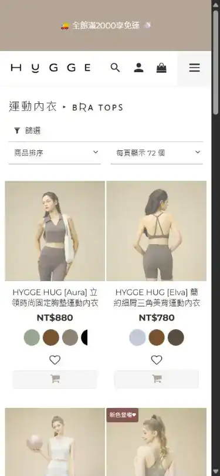
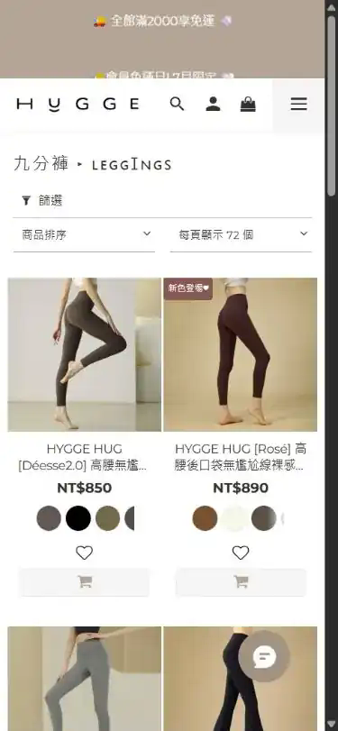
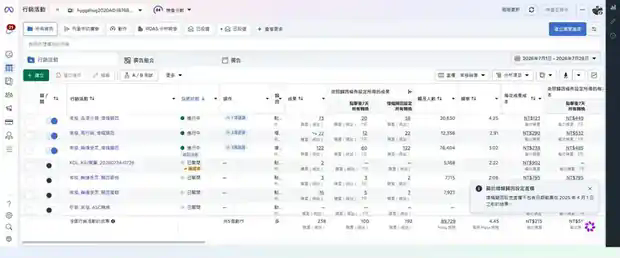

點擊後轉換｜最嚴格
NT$169,507
完整期間 NT$231,280- 排除後購買
- 73
- 排除後 ROAS
- 3.53
2026 July Performance Review
投放架構完成第一階段驗證，增幅歸因營收達 NT$419,982。8 月將集中補強瑜珈褲與運動內衣素材，讓放量具備更穩定的內容供給。
Meta 7 月花費 NT$51,209，三套歸因皆顯示可觀的營收貢獻。
運動內衣 ROAS 7.67，已具備延伸素材與增加預算的基礎。
瑜珈褲 ROAS 2.97，素材說服力與品類頁體驗將同步優化。
GA4 全站營收較 6 月增加 315.7%，工作階段增加 196.7%。旺季需求、商品熱度與媒體投放共同推升整體規模。
7 月的成長幅度高於流量增幅，顯示新增流量同時帶來更高的交易產出。
GA4 數據呈現全站商業表現；Meta 營收貢獻請參考下一節的歸因結果。
三個口徑依轉換認定範圍分為最嚴格、增幅歸因與最寬鬆。點選後可查看各自的營收、購買與 ROAS。
Meta 估算其中 192 筆購買受到廣告帶來的增幅影響，適合用來評估預算放大價值。
本月投遞策略改採增幅歸因，與前期使用 META 預設的做法不同。最寬鬆 ROAS 從 14.42 降至 10.29；同一期間，增幅歸因購買從 6 月 4 筆增加至 7 月 192 筆，點擊後 7 天購買也從 3 筆增加至 100 筆。這次策略調整辨識到更多由廣告帶入的有效購買，後續將持續用兩套口徑交叉觀察新增營收品質。
7/19 的團購活動集中帶入大量訂單。為了看清日常投放的基礎表現，本頁同步扣除當日花費、購買與營收，再重新計算三套歸因結果。
當日花費 NT$3,140，只占全月 6.1%，卻帶來 NT$159,298 的增幅歸因營收。團購對全月高點的貢獻明確，因此另列校正結果能更貼近常態投放。
排除團購高峰後，增幅歸因仍帶來 115 筆購買與 NT$260,684 營收。常態投放已建立可持續觀察的基礎，團購則提供額外的集中放大效果。
7 月完成三層投放骨架。新客輪播承接主要規模，品項分類驗證商品方向，再行銷延續高意圖受眾，後續可依素材供給分層增加預算。
60 筆購買，ROAS 4.55。多款集合與功能型素材為主要流量入口。
20 筆購買，ROAS 5.48。運動內衣已展現較高效率。
12 筆購買，ROAS 4.59。加購與瀏覽受眾維持穩定回收。
加碼訊號：品項分類 ROAS 5.48，是三層架構中最高，但花費只有新客輪播的 31%。8 月可先增加勝出品項的素材與測試預算，再由再行銷承接回訪需求。
品項比較統一採用點擊後 7 天口徑。切換指標可查看營收效率與成本差異。
運動內衣已投遞 12 組素材名稱，瑜珈褲為 8 組；數量與勝出深度仍有差距。瑜珈褲目前帶來 4 筆購買，CPA 為 NT$897。下一波測試將聚焦尺寸選擇、無尷尬線、版型修飾與實穿情境，並同步調整品類頁的選購引導。
素材排行採點擊後 7 天口徑。切換指標可查看營收貢獻、ROAS 與購買量。
「360° 防曬外套」在戶外運動受眾的 ROAS 達 9.93，在運動服裝受眾為 4.15，在類似受眾為 2.98。8 月會保留高匹配組合，並把「多款選擇、功能痛點、選購指南」三種框架延伸至瑜珈褲。
Meta 標記流量共帶來 7,963 次工作階段，整體互動率 60.5%，平均工作階段 90 秒。以下從到達頁、訪客與裝置三個角度觀察站內行為。
以下畫面以行動版 390 × 844 檢視。Meta 標記流量有 96% 來自行動裝置，因此建議優先調整首屏訊息、選購引導與商品比較。


兩欄商品名稱容易被截斷，版型差異也不易快速辨識。可增加無尷尬線、口袋、喇叭、高腰等標籤與比較表；本次檢視曾出現首屏商品圖延後顯示，也建議檢查行動版圖片載入。
查看頁面運動內衣分類頁有 809 次工作階段，互動率 36.8%；瑜珈褲分類頁有 397 次，互動率 39.5%。可優先補上版型比較、尺寸指引、熱銷排序與情境推薦。
96% 的 Meta 標記工作階段來自行動裝置，素材首屏與商品頁行動版體驗會直接影響放量成果。
三層投放均已產生購買，嚴格口徑與增幅歸因的 ROAS 也較 6 月提升。後續會觀察兩套口徑的效率變化，再安排預算調整節奏。
新客、品項與再行銷各自承擔明確任務，可按層級調整預算。
增幅歸因 ROAS 從 2.18 提升至 8.20，點擊後 7 天 ROAS 從 1.78 提升至 4.52。
瑜珈褲與運動內衣需要更多可持續投遞的內容，降低單一素材疲乏。
點選週次可查看建議工作與當週產出。執行順序先補素材，再優化承接頁面，最後依數據逐步增加預算。
目標投遞額約為 7 月花費的 1.95 倍。預算會依素材測試與兩套歸因的觀察結果分階段安排，優先投入運動內衣勝出素材、瑜珈褲新素材與高匹配受眾組合。
Meta 用於廣告營收、購買、成本與素材判讀；GA4 用於全站成長背景與站內行為觀察。
帳號 876808786220814。三套歸因口徑皆採 2026/07/01 至 07/28，並與 2026/06/01 至 06/28 比較。
資源 255979523。全站營收與流量用於呈現整體成長；到達頁、訪客與裝置用於分析 Meta 標記流量的站內行為。
排名採點擊後 7 天口徑，讓不同品項與素材在一致的轉換窗口下比較。
